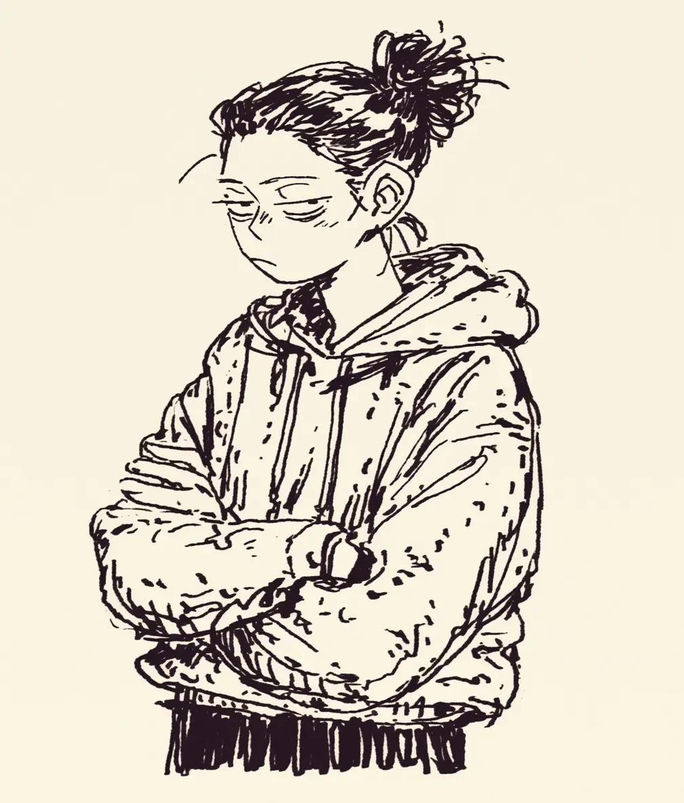

아침 7시에 눈을 떴을 때, 세상에 대한 애정이 전부 증발해 버렸다.
When I opened my eyes at 7 AM, all my affection for the world had completely evaporated.
엄마가 방문을 열며 “오늘 날씨 좋다!”라고 외쳤다.
Mom opened my door and shouted, “The weather’s nice today!”
좋은 날씨가 뭐 어쨌다는 건지 도무지 이해가 안 됐다.
I couldn’t understand what good weather had to do with anything.
커피를 마시기 전까지 나는 사람이 아니라 분노의 덩어리일 뿐이다.
Until I drink coffee, I’m not a person, just a lump of rage.
부엌에 갔더니 커피가 다 떨어져 있었다.
When I got to the kitchen, the coffee was all gone.
그 순간, 팔짱을 끼고 온 우주를 저주하기로 했다.
At that moment, I crossed my arms and decided to curse the entire universe.
엄마가 웃으며 “얼굴 표정 좀 펴”라고 했다.
Mom laughed and said, “Lighten up.”
오늘 하루는 아무와도 대화하지 않겠다고 굳게 다짐했다.
I firmly resolved not to speak to anyone for the rest of the day.